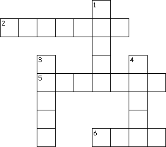
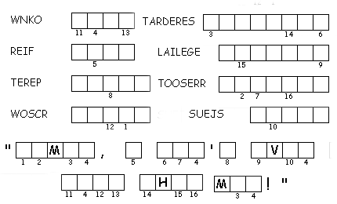

This Week: Luke 19:28-40, Psalm 118:1-2, 19-29; Isaiah 50:4-9a, Psalm 31:9-16, Philippians 2:5-11, Luke 22:14-23:56 or Luke 23:1-49
Elementary School Pew-work
Fill in the blanks using these words: Jesus arrested know fire Galilee rooster Peter crows
Jesus was _________ and led away to the house of the high priest, while Peter followed at a distance. Some people built a ____ in the middle of the courtyard and were sitting around it. ______ sat there with them, and a servant girl saw him. Then after she had looked at him carefully, she said, "This man was with _____ !" Peter said, "Woman, I don't even _____ that man!"
A little later someone else saw Peter and said, "You are one of them!" "No, I'm not!" Peter replied.
About an hour later another man insisted, "This man must have been with Jesus. They both come from _________." Peter replied, "I don't know what you are talking about!" Right then, while Peter was still speaking, a ________ crowed.
The Lord turned and looked at Peter. And Peter remembered that the Lord had said, "Before a rooster ______ tomorrow morning, you will say three times that you don't know me." Then Peter went out and cried hard.
1. How many times did Peter say he did not know Jesus?
_____________________________________________________________
2. What did Peter do when he realized what he had done?
_____________________________________________________________

|
Down 1. The person Peter said he didn't know 3. How a rooster announced dawn 4. A disciple who denied Jesus |
 |
Next week: Acts 10:34-43 or Isaiah 65:17-25, Psalm 118:1-2, 14-24, 1 Corinthians 15:19-26 or Acts 10:34-43, John 20:1-18 or Luke 2